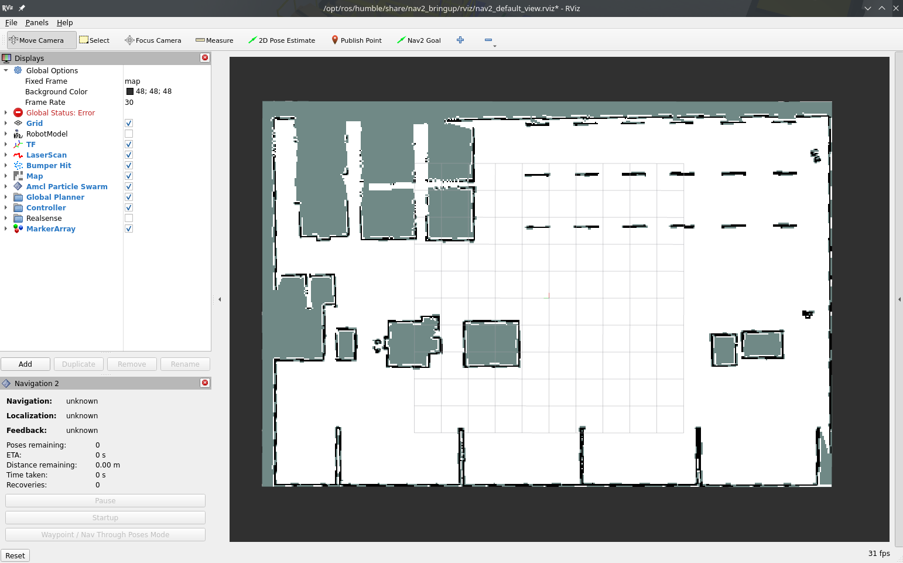
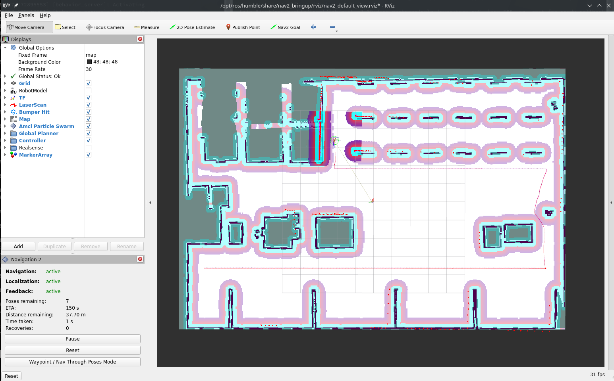

Turtlebot3
In this example, we add a robot and start collecting robot data to Stdout.
You will also need 3 terminal windows, to:
- Run the Nav2 turtlebot3 launchfile: it starts localization, navigation and RViz
- Run navigation inspection demo
- Run DC
Using a different terminal window for DC helps reading its information.
Packages in the workspace
In addition to the ros2_data_collection repo in your workspace, you will need to download the aws warehouse package:
$ cd src
$ git clone https://github.com/aws-robotics/aws-robomaker-small-warehouse-world.git -b ros2
$ cd ..
$ colcon build
Setup the environment
Python dependencies
For this tutorial, we will need to install all dependencies:
$ pip3 install -r requirements.txt -r requirements-dev.txt
Setup Infrastructure
MinIO
MinIO will be used as storage for images and other files. To start it, follow the steps
Once you have your keys, edit the yaml configuration file at dc_demos/params/tb3_simulation_pgsql_minio.yaml by editing all instances of:
- access_key_id
- secret_access_key
PostgreSQL
PostgreSQL will be used as database storage for our JSON. Later on, backend engineers can make requests on those JSON based on measurement requested and time range. To start it, follow the steps
The default yaml configuration file does not need change as it also uses default values.
Setup simulation environment
In the terminal 1, source your environment, setup turtlebot configuration:
$ source /opt/ros/humble/setup.bash
$ source install/setup.bash
$ export GAZEBO_MODEL_PATH=$GAZEBO_MODEL_PATH:/opt/ros/humble/share/turtlebot3_gazebo/models
$ export GAZEBO_RESOURCE_PATH=${PWD}/src/aws-robomaker-small-warehouse-world/
$ export TURTLEBOT3_MODEL=waffle
$ source /usr/share/gazebo/setup.bash
Verify the gazebo world can be loaded properly:
$ gazebo /opt/ros/humble/share/aws_robomaker_small_warehouse_world/worlds/small_warehouse/small_warehouse.world
Gazebo will start with the warehouse environment. You can close it now.
I believe requiring the source along with those export are needed because of this issue
Terminal 1: Start Navigation
Then, in the same terminal (1), start the Turtlebot launchfile:
$ ros2 launch nav2_bringup tb3_simulation_launch.py \
world:=/opt/ros/humble/share/aws_robomaker_small_warehouse_world/worlds/no_roof_small_warehouse/no_roof_small_warehouse.world \
map:=/opt/ros/humble/share/aws_robomaker_small_warehouse_world/maps/005/map.yaml \
headless:=False \
x_pose:=3.45 \
y_pose:=2.15 \
yaw:=3.14
RViz and Gazebo will start: now you see the robot in Gazebo, and the map on RViz.


Terminal 2: Start DC
Run colcon build to install the new configuration file:
$ colcon build
Now, start the demo:
$ ros2 launch dc_demos tb3_simulation_pgsql_minio.launch.py
The robot will start collecting data.
Terminal 3: Start autonomous navigation
Execute
$ ros2 run nav2_simple_commander demo_security
The robot will start moving and you will be able to see all visualizations activated in RViz:

Visualize the data
In the database
Navigate to localhost:8080
- Select dc database
- Select dc table
- Click on Select data
You will see rows filling the database. You can click on one to see its content:

In MinIO (file storage)
Navigate to localhost:9001
- Select mybucket bucket
- Click until you reach camera or map
- Continue until you reached a file, and click on preview (pgm can't be previewed)
You will see rows filling the database. You can click on one to see its content:

With Streamlit dashboard
A dashboard has been developed to help visualize the data collected.
Execute in a new terminal:
$ cd src/ros2_data_collection/dc_demos/dc_demos/streamlit_dashboard/
# Replace by what was created at the start of this demo
$ export MINIO_ACCESS_KEY=<YOUR_ACCESS_KEY>
# Replace by what was created at the start of this demo
$ export MINIO_SECRET_KEY=<YOUR_SECRET_KEY>
$ streamlit run Streamlit_ROS_2.py
# This will be printed:
You can now view your Streamlit app in your browser.
Local URL: http://localhost:8502
Network URL: http://192.168.2.105:8502
Reach the address on your browser: localhost:8502. Here is a video of it:
That's it! Now you can collect your data!
Understanding the configuration
The full configuration file can be found here.
For this demo, we will reconstruct the yaml configuration element by element, given how large it is. Go through the explanation to understand how it works.
Measurement server
Measurements
measurement_plugins sets which plugin to load. We collect
System measurements:
Robot measurements:
Environment measurements:
Infrastructure measurements:
Each has their own configuration: polling interval, source topic, destination paths, topics used as input etc. Going through each of them would be too long here but you can check for each measurement its documentation and the general documentation of measurements
Conditions
We also initialize conditions:
- min_distance_traveled
- max_distance_traveled
They are used in the distance traveled measurement to only take values in a certain range.
Destination server
Here we enable the PostgreSQL and MinIO plugins since it is where we send the data.
PostgreSQL destination
We pass all topics generated by measurements. The node will subscribe to it and transfer the data to PostgreSQL. Note that not all data need to be sent to PostgreSQL, some could be sent elsewhere.
Along with the inputs, we pass the server configuration: username, password, database name etc.
MinIO destination
We pass the topics we want to subscribe to. Here only map and camera since those are the ones generating files.
The src_fields and upload_fields are fields in the JSON sent by the measurement where local and remote paths are stored so the plugin knows where to put the files.